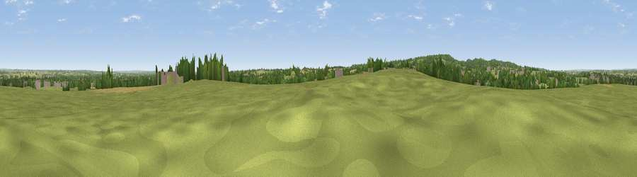

Longdon Hill Top
#25519 in England · top 33% of its area beats it · near LongdonThe view, rendered

A 360° render of this exact spot computed from the terrain model, tree cover and land cover — summer colours, afternoon light, calibrated against photographs of famous viewpoints. Real trees, hedges and buildings will differ in detail.
The panorama
Grey silhouette: terrain skyline in each direction (720 bearings, Earth curvature and refraction included). Dashed green: skyline with trees (+15 m) and buildings (+8 m) as obstacles. Blue strip: how far the ground is visible on each bearing.
Where the view opens
Wedge length = distance to the farthest visible ground on that bearing (vegetation-aware). Rings at 10, 25 and 50 km.
What fills the view
54% grassland · 24% cropland · 17% woodland · 5% built-up
Angular shares of the visible panorama (visual magnitude), not map area. Landscape diversity 0.49 (0–1 Shannon).
Key numbers
More beautiful places nearby
The staircase of upgrades: each row has a higher view potential than everything closer. Driving times are estimates from straight-line distance, calibrated against real road routing — check an actual route before setting out.
| Place | Direction | Drive | Score |
|---|---|---|---|
| Viewpoint near Cannock Wood | WSW · 4 km | ~9 min | 50.7 |
| Viewpoint near Upper Longdon | W · 4 km | ~10 min | 55.9 |
| Viewpoint near Prospect Village | WSW · 6 km | ~13 min | 58.1 |
| Wimblebury Hill | WSW · 7 km | ~14 min | 62.0 |
| Viewpoint near Streetly | S · 17 km | ~30 min | 69.5 |
| Viewpoint near Wootton | N · 32 km | ~49 min | 74.4 |
| Viewpoint near Wootton | N · 32 km | ~50 min | 74.8 |
| Viewpoint near Stanton under Bardon | E · 37 km | ~56 min | 76.0 |
52.72625, -1.87390 · source: osm peak · position refined by local search. Computed location — check access rights before visiting.